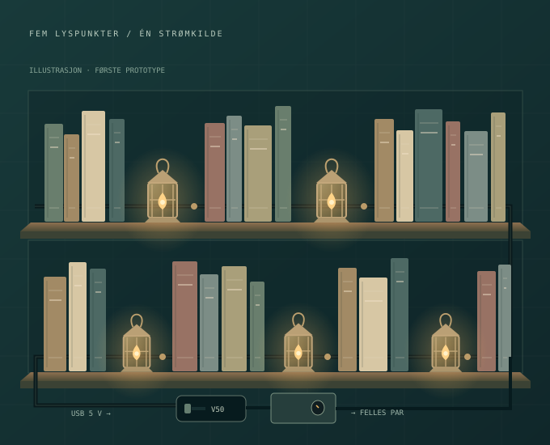

Ryddig bak bøkene
To tynne, svarte ledninger tvinnes lett sammen. Små printede T-bokser skjuler skjøtene. En lykt kan kobles fra uten at de andre slukker.
HJEMMEVERKSTED / BOKHYLLELYS
Fem små lykter. Én oppladbar strømkilde. En diskret, svart ledning langs hyllen.
Her er delene som skal printes, alt som må kjøpes og rekkefølgen vi bygger det i.

01 / PLANEN
Lampene kobles parallelt. Hver får samme spenning og sin egen strømbegrensning.
To tynne, svarte ledninger tvinnes lett sammen. Små printede T-bokser skjuler skjøtene. En lykt kan kobles fra uten at de andre slukker.
USB-kabel inn på venstre ende av boksen, ett ledningspar ut på høyre. Den oppladbare powerbanken blir tilgjengelig for lading.
En vanlig powerbank kan slå seg av når lampene trekker lite strøm. Derfor er det valgt en modell med dokumentert always-on-utgang.
USB +5 V ── bryter ──┬── VIN [S7V8A] VOUT ── F1 ── + til hyllen
│ │
C1 100 µF │
│ │
USB GND ─────────────┴───────── GND ─────────────── − til hyllen
Ved HVER lykt:
Felles + ── Rn (start 1 kΩ) ── kontakt ── lyktens batteri-PLUS
Felles − ───────────────────── kontakt ── lyktens batteri-MINUSC1: 100 µF / 16 V over VIN og GND, etter bryteren. Observer polaritet. F1: MF-R025 på positiv utgang til hyllen. SHDN på regulatoren kan stå åpen. Juster regulatoren til ca. 4,5 V uten tilkoblet lampe og kontroller med multimeter.
Sikringen beskytter ledningsnettet, men erstatter ikke motstanden i hver lampegren. Batteriene skal fjernes før ekstern strøm kobles til.
02 / ALT SOM SKAL HANDLES
Norske butikker først. Spesialdelene har egne utenlandske kjøpslenker.
Listen er dimensjonert for 5 lykter, maks. 5 m hovedledning og 0,5 m avgrening per lykt. Kryss av ting som er kjøpt eller finnes fra før. Valgene lagres bare i denne nettleseren.
Last ned handlelisten som CSV ↗Dokumentert always-on på USB-A ved svært liten last. Banken står utenfor boksen og kan lades. Bruk sideinngangen til lading etter manualen for mottatt revisjon; topplassert USB-C PD er ikke always-on-kompatibel. Ladeledning følger med.
Selger viser også €98,40 med sin mva. Batterifrakt til Norge og norsk avgiftsbehandling er ikke bekreftet. Ikke velg en vanlig bank uten dokumentert varig lavlastmodus.
5 V USB inn; still ca. 4,5 V ut med multimeter før tilkobling av lampene. Den justerbare modellen passer regulatorstøttene i boksen.
Velg S7V8A / 2118, ikke den faste 5 V-modellen. En annen regulator krever ny passformkontroll.
SPST-bryter med nominelt 20 mm monteringshull. Lokkets hull og nøkkelspor er tegnet for akkurat denne modellen.
Direkte sideinnhenting er delvis blokkert. Bekreft pris, lager og Norge-frakt før bestilling; prøv bryteren i printprøven først.
250 mA hold / 500 mA trip ved databladets betingelser. Monteres på regulatorens positive UTGANG til ledningsparet. Isoler de bare bena.
Internasjonal distributør med norsk nettbutikk. Dette er ledningsvern, ikke strømregulering for LED-ene.
Elektrolytt, Ø8 × 7 mm. Monteres nær VIN/GND etter bryteren, med riktig polaritet. Denne størrelsen er brukt i CAD.
Ikke erstatt med en høyere kondensator uten å kontrollere plass. Direkte produktside blokkerer deler av automatisk innhenting.
0,25 W, ±1 %. Inneholder 1 kΩ, 680 Ω, 470 Ω og 330 Ω. Fem endelige motstander monteres, én i hver gren. Start prøven med 1 kΩ per lampe.
Endelig verdi velges etter måling av lampen. Sortimentet gir verdier å prøve; ikke en forhåndsgodkjent sluttdimensjonering.
Norsk alternativ til Adafruit 4448. Klipp av pinnesokkelen. Identifiser +5 V og GND (normalt rød/svart) med måling, og isoler alle andre ledere hver for seg.
Mål ytterdiameteren mot printprøven. Kabelen skal gjennom 5,5 mm-hullet før endene loddes.
To svarte ledere, lett tvinnet. Oppgitt ytterdiameter 1,1 mm hver. 20 ledermeter gir 10 meter ledningspar; ca. 15 ledermeter brukes i planlagt oppsett, resten er margin.
Fem avtakbare lamper pluss ett reservepar. Begge kontakthalvdeler følger med, hver med 10 cm / 20 AWG ledning. Ingen krympetang for kontaktpinner nødvendig.
Tykkere kontaktledninger beholdes utenfor de smale kabelutgangene. Skjøt til den tynne svarte ledningen; kontroller polaritet med kontinuitetsmåling.
40 lengder à 120 mm, i seks diametre: 1, 2, 4, 6, 9 og 12 mm. Isoler hver skjøt og motstand enkeltvis. Tre slangen på før du lodder.
TX10-hode, Ø5,5 × 2,4 mm. 14 monteres: fire i kontrollboksen og to per T-boks. Seks i reserve. Skruene danner gjenger forsiktig i printet plast.
Siden viser også 10 kr / 10 stk. Kontroller at handlekurven tilsvarer 20 skruer totalt. Ingen muttere eller gjengeinnsatser i denne prototypen.
Pakken har 25 svarte 2,5 × 100 mm-strips. Omtrent 15 trengs til kabelstrekkavlastning, avgreninger og forsiktig, polstret feste av regulatoren. Bruk eksisterende tilsvarende strips hvis du har.
Små merker inne i boksene skiller + fra − når begge ledninger er svarte. Egne etiketter kan brukes i stedet. Alle elektriske skjøter isoleres med krympeslange; merketeipen er for identifikasjon.
Kjøpslenken er til 1 kg med spole. Du bruker bare en del av rullen. Svart PLA eller PETG som finnes fra før er også aktuelt. 140 g er en konservativ reserve, ikke verifisert slicervekt.
48 W, 230 V og temperaturjustering 160–480 °C. Startpakken har rengjøringssvamp, hjelpende hånd med lupe, pinsett, tang, tinnsuger, loddelisse og 10 g loddetinn.
Bruk holderen til den varme bolten og et varmebestandig underlag. Luft godt ved lodding. Egen tilsvarende stasjon kan brukes.
Måler DC-spenning, lav DC-strøm og kontinuitet. Måleledninger og to AA-batterier følger med. Brukes til å stille regulatoren, måle lampestrøm og kontrollere polaritet.
Ved strømmåling står meteret i serie med lampen, med riktig inngang og område. Ikke mål strøm ved å legge prober direkte over batteriet.
Område 0,08–10 mm² dekker 0,14 mm²-ledningen. En eksisterende tang kan brukes dersom den faktisk støtter så tynn flertrådet ledning.
Til å klippe tynn kobberledning, motstandsben og strips. Kan sløyfes hvis du allerede har en egnet liten avbiter eller den medfølgende tangen dekker behovet.
Produktsiden dokumenterer elektronikk-sideavbiter, men lover ikke helt plant snitt (flush cut). Det er ikke nødvendig for disse skjøtene.
Inneholder TT10 til de vanlige TX10-skruehodene samt små flate SL1,5 og SL2 til regulatorjustering. Ett sett dekker begge oppgaver.
230 V, justerbar 50–600 °C. Bruk moderat varme og beveg luftstrømmen når krympeslangen krympes, før skjøtene legges i plastboksene.
Kjøp bare det som mangler. Disse postene er valgfrie tillegg til startpakken.
Linocell 12 W USB-A. Bruk eksisterende passende USB-lader sammen med powerbankens medfølgende ladekabel; kjøp bare hvis du mangler. Kan også drive prototypen direkte uten bank.
Fluxfylt, 100 g. Startpakken har allerede 10 g loddetinn, så denne rullen er valgfri. Kjøp ved behov eller dersom egen loddebolt ikke har egnet tinn.
Til å måle USB-kabel, bryter og prøvens hull. Batteri følger med. Nyttig ved tilpasning, men du kan også prøve de faktiske delene direkte i passformprøven.
Varmebestandig arbeidsunderlag med rom til smådeler. Oppgitt til 480 °C. Bruk eksisterende egnet loddeunderlag hvis du har; legg den varme bolten i holderen.
Ingen treff. Prøv et annet søk eller vis alle butikker.
03 / PRINT SELV
Én kontrollboks og fem T-bokser. Begynn med en liten passformprøve.

Dra for å rotere · rull / klyp for zoom · velg en del under. Visningen viser geometrien; bruk STL-filen i sliceren.
Kontrollboks: 110 × 58 × 38,4 mm
T-boks: 48 × 22 × 11,8 mm
Svart PLA eller PETG. Sett av ca. 140 g inkludert prøve og margin. Mengden er et geometrisk anslag, ikke en slicermåling.
Last ned hele pakken ↓Full byggeguide (README) ↗72 × 26 × 9,4 mm. Prøv bryterhullet, USB-kabelen og 2,5 / 2,6 mm skruepiloter før hele boksen.
110 × 58 × 36 mm. Støtter til regulator, tie-fester og kabelhull i motsatte ender.
110 × 58 × 4 mm totalt. Hullet er laget for COM-11138. Print flat utside ned og styrekant opp.
48 × 22 × 10 mm. Hovedledning rett gjennom; lyktens korte ledning ut på siden. Motstanden ligger i denne grenen.
48 × 22 × 1,8 mm. Lukkes med to M3 × 8-skruer. Skru forsiktig rett i den printede plasten.
Startverdier for sliceren. Alle filer er i mm. Bunnene printes med bunnen ned. Kontroller de små broene ved tie-festene i sliceren. Ingen del er fysisk printet eller passformtestet ennå; ingen ferdig G-code eller bekreftet printtid er inkludert.
Hver av de fem delene har én sammenhengende solid, lukket mesh og positivt volum. CAD viser ingen kollisjon mellom lokk/bunn eller komponentenes referansevolumer og boksen. Beregnet klaring fra bryter til gulv er 10,4 mm før ledninger.
Fysisk passform, bryterens klips, skruenes grep, kabelstrekkavlastning, innvendig ledningsføring, varme og elektrisk funksjon gjenstår. Print prøven først. Kabelhullene er 5,5 mm for USB-ledningen og 4 mm for ledningsparet; tre løse ender gjennom før lodding. Boksen har kabelhull, ikke ferdige USB-kontakter.
Maskinlesbar CAD-kontroll · Referansesammenstilling (STEP) · Redigerbar CadQuery-kilde
Referansesammenstillingen inneholder forenklede komponentvolumer. Den skal ikke printes som én del.
04 / FRA DELER TIL LYS
Ja, dette prosjektet trenger en loddebolt. Ferdige kontaktledninger gjør at vi slipper en egen krympetang for kontaktpinner.
Selger oppgir 3 × AG3/LR41, nominelt 4,5 V. Innmaten er ukjent. Identifiser hele batteristabelens + og −, eventuell elektronikk og original strøm med ferske celler. Mål strøm med multimeter i serie; aldri legg strømmåleren rett over batteriet.
Koble USB via bryteren til VIN og GND. Monter kondensatoren med riktig polaritet. Still utgangen til ca. 4,5 V uten lampe, fjern skrutrekkeren og mål igjen. Sikringen skal på utgangen til ledningsnettet. Ikke koble ekstern strøm til en lykt med batterier i.
Start med én 1 kΩ-motstand i lampens positive gren. Den gir forsiktig strømbegrensning, men lampen kan lyse svakt. Sammenlign strøm og lys med originalen. Endelig verdi må passe lampens LED eller elektronikk; ikke fjern motstanden bare fordi lyset er svakt.
Sjekk bryterklips, kabeldiameter og skruegrep på prøven. Tre ledninger inn før lodding. Fest kablene med strips, isoler alle skjøter og la bryterledningene ha en serviceløkke. Regulatoren må festes polstret uten press på komponenter eller justering.
Mål hyllen, tvinn to svarte ledninger lett sammen og merk positiv ved hvert uttak. Lag forskjøvede T-skjøter, isoler hver skjøt med krympeslange og legg en motstand kun i hver lampegren. I siste T-boks isoleres endene; videreføringen kan stå ubrukt.
Sjekk polaritet i alle kontakter, kabelnes trekkavlastning, temperatur med lukket lokk og at powerbanken holder seg på ved liten last. Test lading og av/på før systemet settes mellom bøker. Kontroller gjeldende V50-manual: USB-A gir always-on; topplassert USB-C PD kan deaktivere funksjonen.
05 / GRUNNLAGET
Produktlenkene i handlelisten peker til de faktiske varene. Disse kildene forklarer valgene og de elektriske grensene: